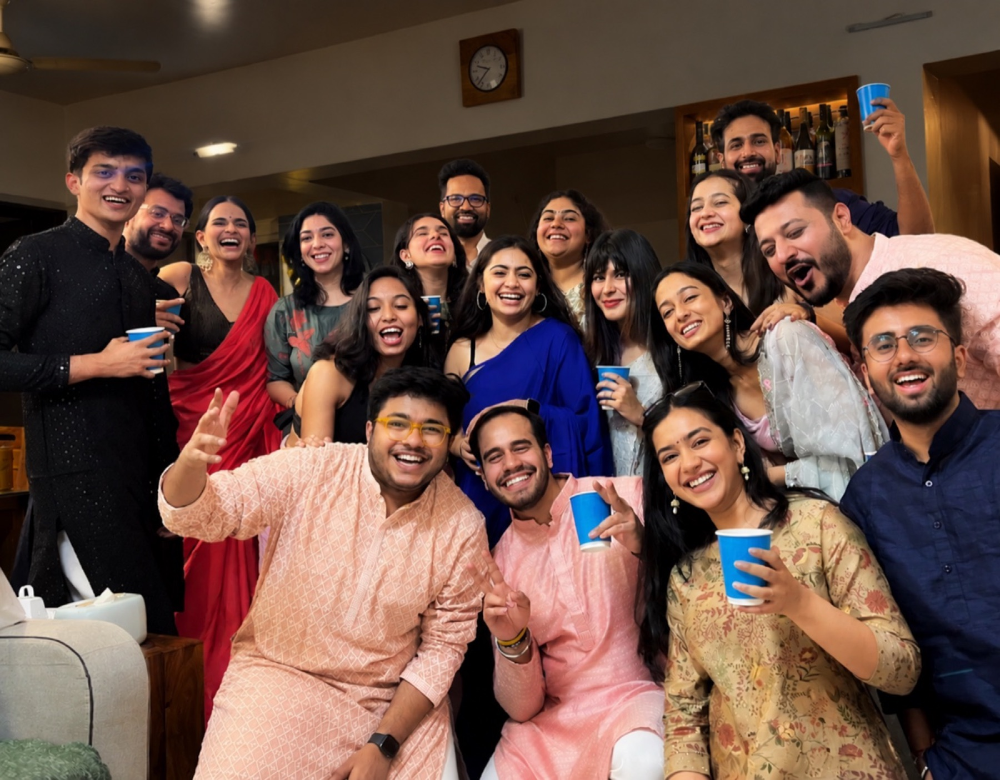
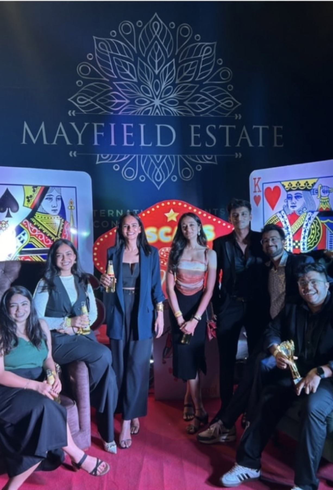
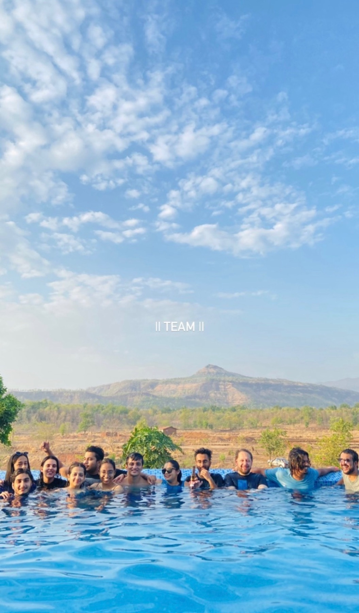
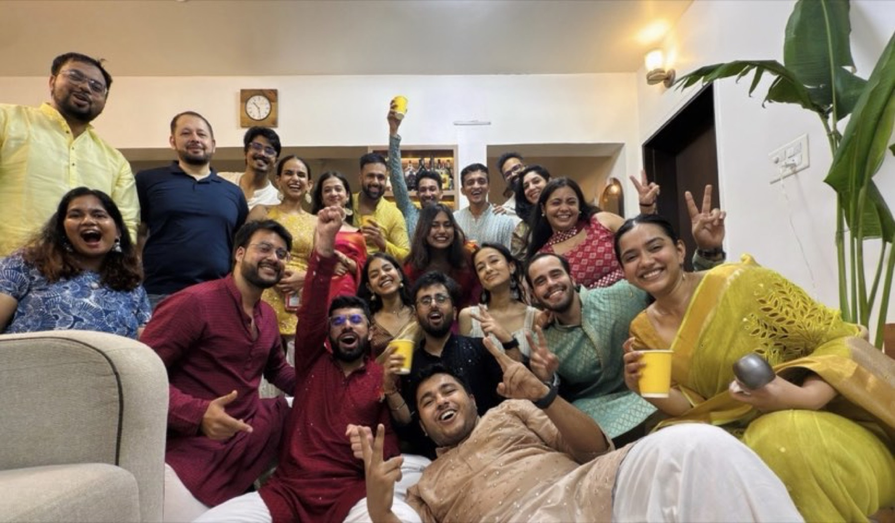
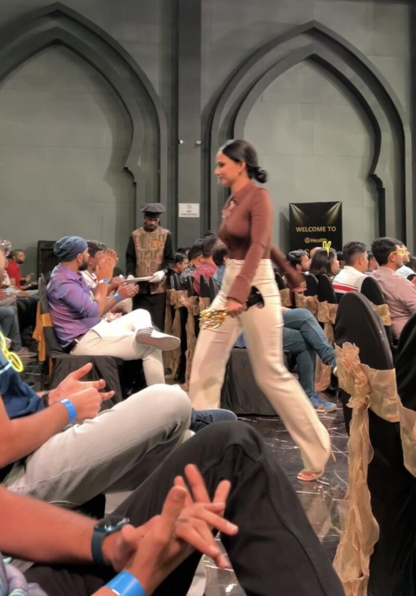
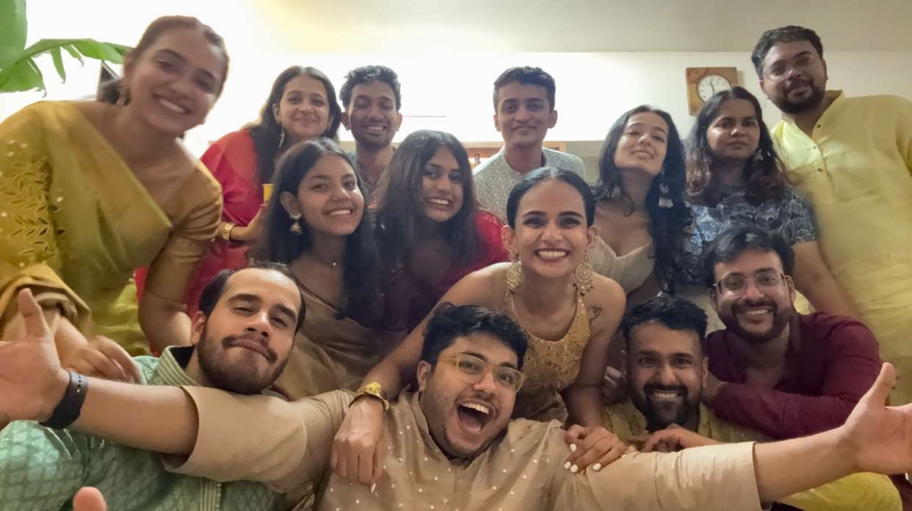
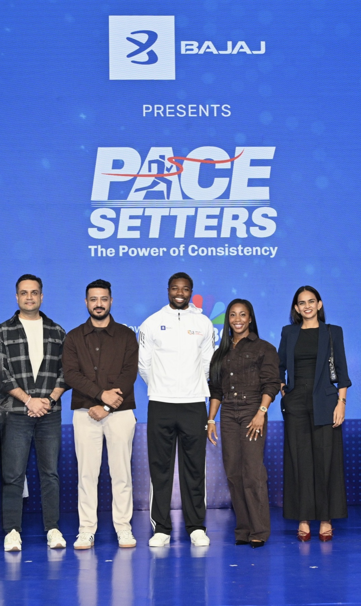

leadership & culture
Shipping products is great. Helping people grow is better.



Chapter 01 · Where it started
It started small. The ambition didn’t.
In 2019 the design function was two people and no process. Reviews were vibes. “Does this look okay?” “Yeah… I think so?” Feedback was nodding until the silence ended, because nobody wanted to be the bad guy.
I never sat down and decided to build a design culture. I sat down to fix why the review meeting was so awkward, why designers were scared to speak, and why everything was stuck with me. Culture turned up while I was fixing those.
What I wanted was narrower than a mission statement and harder than one: designers who understood the product, influenced the decision, owned the outcome, and had somewhere to grow next.
- 2019Where this starts
- 2Designers, at the beginning
- UIThe competency I came to lead
- Health techHospitals, patients, insurance, wellness
A note on scope, because it matters: the design function grew from two people to twenty-four. Inside it I led the UI competency and ran design for a product squad, moving from Lead UI Designer to Dy. Design Manager. This is the story of a team I helped build and partly led, not a team I alone owned.
Chapter 02 · Two to twenty-four
From a handful of designers to a team with its own momentum.
Six years, one dot per designer. The interesting part isn’t the headcount. It’s what each year broke, and what had to be invented to fix it.
-
2019 2 designers
Two designers. Zero process.
Reviews were vibes-based. “Does this look okay?” “Yeah… I think so?” Feedback was nodding until the silence ended. Nobody wanted to be the bad guy.
-
2020 4 designers
Doubled the team. Chaos doubled faster.
Onboarding was a Google Doc and a prayer. Three designers redesigning the same component, and none of them knew.
“Doubled” is the word in the source; 4 is my reading of it, not a counted figure.
-
2021 7 designers
Started building rituals. Accidentally.
The first structured critique happened because I got frustrated in a meeting. Someone wrote it down. We did it again. Then it was a Thing.
No headcount is recorded for 2021. The dot is positioned between the 2020 and 2022 figures and is illustrative.
-
2022 10 designers
Ten designers. Culture became visible.
Juniors started running sessions. Seniors started saying “you’re right.” Design presented directly to leadership. I started sitting in the back row.
-
2023 24 designers
Twenty-four designers. And the award.
Fifteen UX and nine UI, split across two competencies. I held the UI side. In the same year the team won Best Team at AOP.
15 UX + 9 UI counted off the org chart in the DesignOps Review of 17 Aug 2023.
-
2025 23 designers
Reshaped around squads.
A January roster puts twenty-one in seat and twenty-three planned: product-embedded designers, a central floating team, interns, and single owners for the design system and the AI work.
Jan’25 column in Revised_Titles.xlsx: 21 current, 23 planned, interns included.
Each dot is one designer in the count for that year, a quantity, not a person. Figures for 2019, 2022, 2023 and 2025 are recorded; 2020 and 2021 are read off the words “doubled” and the rituals year, and are shaped, not counted.
What the job turned into
At two designers
I was the best reviewer in the room, so everything routed through me. That worked, right up until it was the thing stopping the team.
At twenty-four
Hiring, team shape, delegation, mentoring, and getting design into the rooms where product decisions were actually made. My job stopped being the work and started being the conditions for it.
Earlier I measured my value by how much I contributed. Scaling forced me to measure it by how little I needed to.
Chapter 03 · Ways of working
Growth needed a little structure.
More people doesn’t make a better team. It makes a louder one. Twice we changed the shape of the function: first split by craft, then rebuilt around the products.
2023 · By competency
24 designers
- UX competency 15 three competency leads, twelve designers
- UI competency 9 led by me
2025 · By squad
21 designers
- Product-specific teams 6 embedded in a squad for 3–6 months
- Central UX floating team 8 moved to wherever demand was
- Interns 3 growing to seven
- Design system 1 standardisation
- AI product innovation 1
- Design management 2
Drawn around four product lines
- Wellness
- HRx · Lab, Pay, Hospital
- HRx · Utilization, Vidal, SFDC
- DRx · PMS, EMR, B2C, SFDC
Design Team 2.0
proposed · Proposed model, October 2024What the reshape was actually for: six objectives, written down before anyone moved desk.
-
Expertise around products
Deep product knowledge, instead of servicing tickets across everything.
-
Cross-functional by default
Feasible solutions tied to business metrics, because the designer was in the room.
-
End-to-end ownership
Designers lead product design independently, start to finish.
-
Room to innovate
An environment where design excellence is possible, not incidental.
-
Visibility of demand
See the load coming, and scale up or down without guessing.
-
No silos, no boredom
Rotation across squads every three to six months.
How it was meant to run
- Designers embedded in a product team for three to six months.
- Reviewed quarterly, to rotate or scale up.
- Reporting into the squad, dotted line to the UX team for mentoring.
- Some dedicated to DesignOps: design system, AI products, design excellence.
Chapter 04 · The culture
Good work matters. So does how it feels to do it.
None of this was a programme. It was a set of small, repeatable containers, easy to skip and impossible to replace, and a lot of photographs nobody art-directed.




Every photograph here is from Arushi’s own files. Nothing is stock and nothing is generated. Imperfect beat aesthetic. Every time.
The rituals
Culture needs containers. These were ours.
-
Every Friday
Weekly crits
Silent sticky notes first. Then talk. No ambushes, and honest feedback with a name attached.
-
Bi-weekly
Design jams
A twenty-minute sketch sprint on a shared problem. Intern and lead drawing side by side.
-
Monthly
Share & tell
Not what you made, but what you learned. Failures actively encouraged, and usually the most useful.
-
Ad-hoc
Chaos reviews
Anyone could call one. “I’m stuck, three people, fifteen minutes?” Usually solved it.
-
Quarterly
Know-how sessions
Deep dives led by the team, not by managers. The best ones ran forty-five minutes over.
-
Monthly
Design lunch
No work allowed. Someone opened their laptop at minute twenty every single time. We allowed it.
One rule I accidentally enforced
You can disagree here. But you have to explain your thinking.
Not this
- “I don’t like this.”
- “My gut says no.”
This
- “This breaks consistency…”
- “This might confuse users…”
Learning that didn’t come from me
The best thing I did here was get out of the way. Designers teaching designers lands differently than a manager explaining something.
24+
sessions run
100%
designer-led
0
mandatory attendances
If you figured something out this week, you’re presenting it next month.
-
Motion design 101
18 attendedBecame a team standard
-
Writing for designers
14 attendedChanged how we annotate
-
Accessibility deep dive
22 attendedAdded to the design checklist
-
Component thinking
19 attendedRestructured the design-system process
-
Research synthesis
16 attendedAdopted across squads
-
Figma variables
21 attendedCut handoff time
Presenters are named in the source. They are colleagues, so the topics are published and the names are not.
Things that were very normal on this team
- Juniors questioning seniors, politely but confidently.
- Seniors saying “you’re right, I missed that.”
- Designers presenting directly to leadership.
- Me sitting quietly while they handled it.
Chapter 05 · The award
And then the team won.
AOP 2023
Best Team Award
Out of every team in the company, design won.
Alongside it that year, Stellar of the Year.
-
1
Survive
Two designers and startup chaos. We shipped things nobody questioned, because nobody knew how to.
-
2
Build
Rituals formed. Crits got structured. People started saying actual things out loud.
-
3
Lead
Design started driving decisions, presenting to leadership, setting culture cross-functionally.
Not why we won
- Individual brilliance or one big launch.
- The design system, the metrics, the portfolio.
Why we won
People across the org wanted to work with the design team. That’s it.
The source states the award and the team’s reading of why. It does not establish that any one initiative caused it, and the page does not claim that.
Chapter 06 · Growing people
A career should have more than one direction.
The fastest way to lose a good designer is to offer them exactly one way up. The organisation ran a five-track ladder; my job was to make it mean something in a one-to-one rather than sit in a deck. Open a track to see what each rung asked for.
The ladder designers grew through
Career framework operated by the design organisation at Bajaj Finserv Health. Published here in sanitised form: bands and tracks only.
-
Foundation L1
Learning UX basics
Understands usability, accessibility, IA and interaction principles.
-
Developing L2
Designing user flows
Wireframes and prototypes for end-to-end flows.
-
Proficient L3
Improving user journeys
High-fidelity prototypes for complex flows.
-
Advanced L4
Establishing standards
Defines UX guidelines for projects, aligns solutions with business and user needs, advocates for consistency.
-
Foundation L1
Mastering the basics
Learns colour, typography and layout.
-
Developing L2
Delivering quality consistently
Designs screens for usability and consistency.
-
Proficient L3
Contributing to the system
Complex layouts for multi-platform projects.
-
Advanced L4
Leading standardisation
Defines visual standards across projects, guides teams, aligns design with business goals.
-
Foundation L1
Creating basic designs
Understands core product design principles, tools and workflows.
-
Developing L2
Designing user-centric features
High-fidelity designs aligned to user and product goals.
-
Proficient L3
Defining design systems
Reusable systems and frameworks for scalability, consistent across product workflows.
-
Advanced L4
Leading product strategy
Long-term strategy, scalable frameworks, anticipating trends to create future-ready solutions.
-
Foundation L1
Mastering principles and tools
Design principles plus HTML and CSS, enough to collaborate properly with developers.
-
Developing L2
Applying design-to-code basics
Builds prototypes and components with AI tools.
-
Proficient L3
Creating advanced scalable designs
End-to-end front-end through AI.
-
Advanced L4
Shaping AI-driven vision
Sets the direction for AI-powered design workflows across the organisation.
-
Foundation L1
Overseeing teams and workflows
Plans and organises design tasks.
-
Developing L2
Managing projects and resources
Leads cross-functional initiatives.
-
Proficient L3
Developing high-performance teams
Coaches and mentors to scale quality.
-
Advanced L4
Shaping growth and development
Mentorship programmes, frameworks for hiring, upskilling and retaining talent.
What “good” meant, by role
Role-level targets from the team’s skill-mapping template. Individual scores exist in the same file and are not published.
| Role | Research | Information architecture | Interaction design | Visual design | UX writing | Prototyping | Usability testing |
|---|---|---|---|---|---|---|---|
| Jr. UX Designer | 2 | 2 | 3 | 2 | 2 | 3 | 2 |
| UX Designer | 3 | 3 | 4 | 2 | 3 | 4 | 3 |
| Sr. UX Designer | 4 | 4 | 4 | 3 | 3 | 5 | 4 |
| Lead UX Designer | 4 | 5 | 5 | 3 | 3 | 5 | 5 |
| UI Designer | 3 | 2 | 2 | 4 | 2 | 4 | 2 |
| Sr. UI Designer | 3 | 3 | 3 | 4 | 3 | 4 | 3 |
| Lead UI Designer | 3 | 3 | 3 | 5 | 4 | 5 | 3 |
The number is the level that role was expected to reach, one to five. It is a definition of “good”, not a score anyone was given.
RISE
A company programme spanning Technology, Product and Design.
-
1
Identify
The competencies that matter at each band.
-
2
Assess & align
Rate against them, one to four, self and manager.
-
3
Plan
Turn the gap into an individual development plan.
-
4
Act
Training and masterclasses against that plan.
-
5
Track
Monitor progress, then start again.
- 1Basic
- 2Intermediate
- 3Advanced
- 4Exceptional
50%
coverage of the eligible population with more than a year’s tenure
target, not a resultThe target set in the programme document. No source records whether it was met.
What this looked like in practice
A documented path to the next level, juniors in senior reviews early, exposure rather than protection, and everyone paired with a senior beyond the manager relationship.
Nothing came as a surprise: not a promotion decision, not a development plan.
Chapter 07 · The evidence
Culture is a feeling. Leadership also needs evidence.
Six numbers I can stand behind, each one with the file it came from and the thing it does not prove.
-
24
designers in the function
On 17 August 2023: fifteen UX and nine UI, counted off the org chart.
snapshotDesignOps Review, 17 Aug 2023
-
12
promoted internally
Designers who moved up a level rather than being replaced from outside.
recordedretention-growth-morale.html
-
3
moved into management
Individual contributors who became people leaders, a first for the team.
recordedretention-growth-morale.html
-
24+
knowledge sessions run
Every one of them led by a designer, none of them mandatory.
recordedBuilding a Strong Design Culture.html
-
6
rituals that held it together
Crits, jams, share-and-tell, chaos reviews, know-how sessions, lunch.
recordedBuilding a Strong Design Culture.html
-
5
tracks a designer could grow along
UX, UI, product, design engineering, management, across bands GB03 to GB08.
recordedDesignTeam_CareerGrowth 1.2.pdf
Each of these is countable and traceable to one named file. Attrition and tenure figures exist in my records but disagree with each other, so they are deliberately absent until I can reconcile them.
The team’s roster, competency scores and promotion records sit behind this. They are real, and they are not mine to publish.
Illustrative shape only. No real row, name or score is rendered here or sent to your browser.
This portfolio is a static site, so there is no server to authenticate against. Nothing confidential is published, blurred or otherwise. The preview above is invented shape, not covered-up data.
Chapter 08 · What I believe
My job isn’t to be the best designer in the room.
Five positions I have had to defend in a real room, not five values on a wall.
-
01
Ownership over micromanagement
Talented people perform best when the work is genuinely theirs. I hire people I believe in, give them real ownership, and hold them to outcomes rather than to process.
If I’m the bottleneck, the system is broken.
-
02
Safety to speak honestly
The quality of a team’s work tracks how safe people feel being wrong. We built that into critique deliberately: “I don’t know yet” and “I was wrong about this” were normal sentences.
Mistakes became conversations, not labels.
-
03
Give the team the spotlight
When the team can shine, I stay in the background. Credit gets attributed correctly, and designers present their own work, including to the people who sign it off.
If you designed it, you present it.
-
04
Think in systems
Whether it is one user flow or an organisation: how do the parts interact, where are the dependencies, what breaks under load. The same habit shaped the design system and the shape of the team.
Scale exposes weak systems. It doesn’t create them.
-
05
Hire for slope, not position
Where someone is today matters less than how fast they move. I look for people who can explain why they designed something, who say “I did” rather than “they told me”, and who frame the problem before solving it.
I don’t hire for today’s tasks. I hire for tomorrow’s judgement.
Chapter 09 · Still building
The story keeps going.
Still building. Still learning. Still making room.
What I learned growing this team is the thing I now work on directly: the operating layer underneath design. How work gets planned, how quality gets held, how AI changes what a design team even is. Different problem, same instinct: build the system, then get out of the way.
Earlier, I measured my value by how much I contributed. Scaling forced me to measure it by how little I needed to.